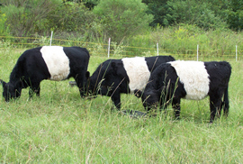

Serving Mississippi naturally...
grass fed livestock for over 10 years!
Our Belted Galloway Cattle are rotationally grazed on pastures throughout the year to ensure fresh nutritional grasses.
$195 per share plus butcher fee. A typical order will include a variety of cuts including but not limited to:
Call: 601-415-1494
Email: lisa.kuiper@livingstonspringsfarm.com
For specials and announcements:
© 2013 Livingston Springs Farm. All Rights Reserved.